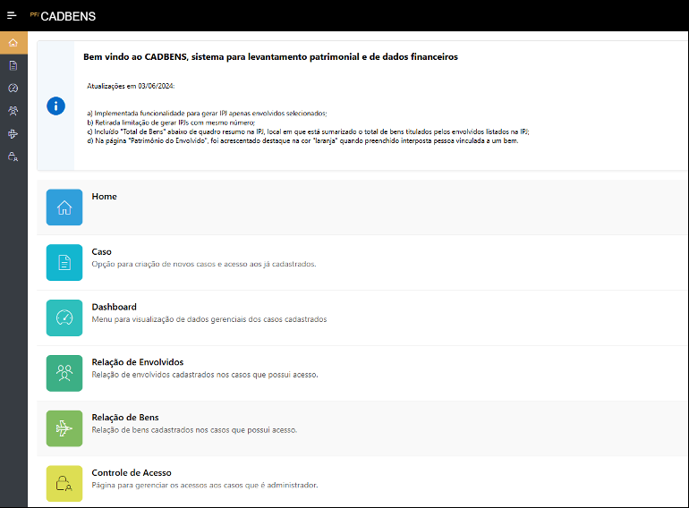
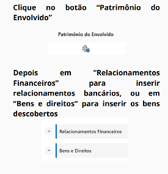
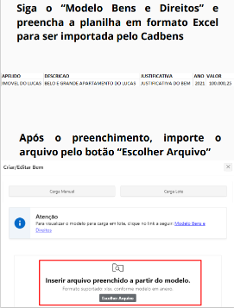
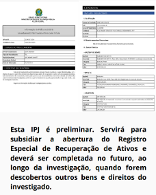
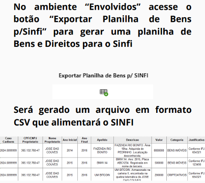
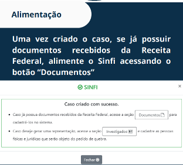
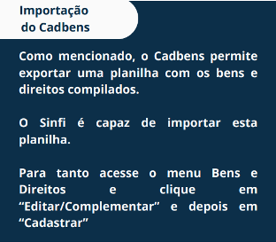
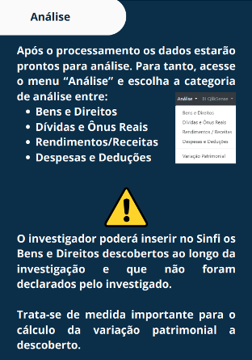
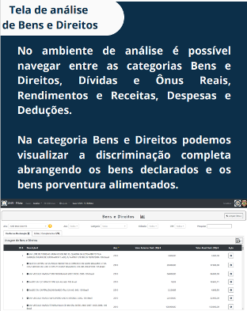

A análise fiscal é uma técnica investigativa voltada à avaliação da coerência entre os dados declarados por um indivíduo ou empresa aos órgãos fazendários e os elementos patrimoniais e financeiros identificados durante a investigação criminal. Trata-se de um instrumento essencial para aidentificação de incompa tibilidades patrimoniais,ocultação de ativos,simulações de operaçõesefluxos de lavagem de dinheiro.
No contexto da persecução penal, a análise fiscal permite ao policial federal confrontar os dados declarados com os fatos apurados, revelandodiscrepâncias entre rendimentos e padrão de vida,bens não declarados,dívidas simuladase receitas ocultas. É especialmente útil em investigações de crimes com aspectos econômicos, crimes financeiros, corrupção, organização criminosa e lavagem de dinheiro, ao fornecerbase probatória objetivapara a formulação de representações judiciais e medidas cautelares.
O levantamento patrimonial consiste em uma técnica desenvolvida, por meio da qual é feito o levantamento das informações sobre o patrimônio do investigado (bens, direitos e valores) e sua origem, inclusive oculto e/ou dissimulado. Além de identificar o patrimônio, responde perguntas como: está em nome de quem; quando, por quanto e de qual forma foi comprado/vendido; quem o utiliza de fato e quem paga por suas despesas etc. Por isso, é muito útil em investigações de lavagem de dinheiro, uma vez que poderá revelar indícios sobre os próprios atos de ocultação e dissimulação que caracterizam esse crime.
Preliminarmente, o levantamento patrimonial pode ser realizado por meio de diligências de campo, análise de documentos, fontes abertas e informações presentes em bancos de dados indicativos da titularidade de bens. Conforme a investigação ganha mais robustez e novas etapas são alcançadas, outros dados podem ser acrescentados no levantamento patrimonial, principalmente aqueles obtidos após a utilização de medidas cautelares, como o afastamento de sigilo fiscal, que permite acessar outros bens e direitos não disponíveis em fontes mais acessíveis.
O levantamento patrimonial também possui relevância para embasar uma ação preparatória para medidas constritivas cautelares (ex.: sequestro de bens), por isso, é uma das técnicas mais importantes para viabilização da recuperação de bens/direitos/valores. Geralmente, enfoca o patrimônio ilícito do investigado (lavado ou não), mas pode alcançar o patrimônio lícito nos casos em que se busque, por exemplo, a reparação do dano.
OCadbensé um sistema desenvolvido para apoiar investigações patrimoniais no âmbito da Polícia Federal, oferecendo uma plataforma estruturada para o cadastro e organização de bens, direitos e relacionamentos financeiros identifi cados ao longo das apurações.
O Cadbens permite que os investigadores criem casos, cadastrem os envolvidos e registrem os bens, direitos e relacionamentos manualmente ou em lote, por meio de planilhas. Além disso, o sistema gera automaticamente umaInformação de Polícia Judiciária preliminar (IPJ), que serve como subsídio inicial para o Registro Especial de Recuperação de Ativos. O Cadbens também possui integração com o sistema Sinfi, permitindo a exportação dos dados patrimoniais em formato .csv, facilitando a continuidade da análise fiscal e patrimonial.
O fluxo de uso do sistemaCadbensé estruturado para facilitar o levantamento patrimonial durante investigações. O Cadbens é acessível através da intranet.

O primeiro passo é acriação de um caso, se já houver registro no sistema Epol, o Cadbens realiza a busca automática dos dados relacionados.
Em seguida, procede-se aocadastro dos envolvidos, sejam pessoas físicas ou jurídicas, vinculadas ao caso em investigação.
Com os envolvidos registrados, o próximo passo é ocadastro do patrimônio, onde são inseridos os bens, direitos e relacionamentos financeiros identificados, como contas bancárias ou participações societárias.

O sistema oferece duas formas de inserção de dados patrimoniais:carga manual, para o registro individual de cada bem, ecarga em lote, por meio de pla nilhas Excel, agilizando o processo em casos com grande volume de informações.

Após o cadastro dos bens e direitos, o Cadbens permite ageração automática da Informação de Polícia Judiciária preliminar (IPJ), documento que subsidia o Registro Especial de Recuperação de Ativos e pode ser complementado ao longo da investigação.

Por fim, o sistema possibilita aexportação dos dados para o Sinfi, gerando um arquivo em formato .csv com os bens e direitos registrados, promovendo a integração entre os sistemas e a continuidade da análise patrimonial.

O Cabens se trata de uma ferramenta essencial para a sistematização e o aprofundamento das investigações financeiras, contribuindo para a identificação de patrimônio oculto e para a recuperação de ativos.
A obtenção de dados fiscais no âmbito da investigação criminal está sujeita aregras constitucionais e legais rigorosas, especialmente no que se refere à prote ção do sigilo fiscal, previsto no art. 5º, inciso X, da Constituição Federal, e regu lamentado pelo art. 198 do Código Tributário Nacional e pelaLei Complementar nº 105/2001.
OSTF tem reiteradamente decididoque o acesso direto a dados fiscais por autoridades policiais ou pelo Ministério Públicosem autorização judicial é ilegal, mesmo que o objetivo seja subsidiar investigações criminais.
No julgamento doRecurso Extraordinário nº 1.393.219, a Corte reafirmou quenão é permitido ao Ministério Público requisitar diretamente à Receita Federal informações fiscais de contribuintes, sendo imprescindível aintervenção judicial préviapara tais dados poderem ser utilizados como prova válida. Essa decisão reforça o entendimento de que o sigilo fiscal é uma garantia fundamental, e sua quebra exige controle jurisdicional para evitar devassas indevidas na vidaprivada dos cidadãos.
Contudo, o STF também reconheceu, no julgamento doTema 990 da Repercussão Geral (RE 1055941), queé constitucional o compartilhamento de dados fiscais e bancários pela Receita Federal e pela Unidade de Inteligência Financeira (UIF/Coaf) com os órgãos de persecução penal, desde que decorrente de procedimento fiscal regularmente instaurado e formalmente documentado,sem necessidade de autorização judicial prévia. Trata-se de umatransferência de sigilo, e não de quebra, sendo válida para fins penais quando realizada nos limites legais e com posterior controle jurisdicional.
Embora o acesso a dados fiscais protegidos por sigilo dependa, em regra, deautorização judicial fundamentada, há exceções juridicamente válidas que devem ser consideradas no contexto da investigação criminal.
Uma dessas exceções ocorre quandoo próprio investigado fornece espontane amente os documentos fiscais, como declarações de imposto de renda, extratos bancários, comprovantes de despesas ou contratos. Nesse caso,não há quebra de sigilo, pois o titular da informação consente com o acesso. A jurisprudência reconhece que a entrega voluntária de documentos elimina a necessidade de representação judicial, caso haja registro formal da entrega e da origem dos dados, preservando a cadeia de custódia e a legitimidade da prova.
Os dados fiscais podem ser fornecidos mediante autorização judicial pelas três esferas, a saber: nível federal, a cargo da Receita Federal do Brasil, que administra por exemplo, a Declaração do Imposto de Renda da Pessoa Física; nível estadual, a cargo da Secretaria da Fazenda, detentora de informações sobre Escrituração Contábil Fiscal de apuração do ICMS e do IPI; e ao nível municipal, a cargo das Secretarias de Finanças do Município, que detém as informações sobre Notas Fiscais Eletrônicas de Serviços.
As declarações fiscais são documentos formais enviados por pessoas físicas, jurídicas ou instituições à Receita Federal e outros órgãos fazendários, com o objetivo de informar rendimentos, bens, dívidas, operações financeiras e patri moniais. No contexto da investigação criminal, essas declarações representam umafonte primária de dados estruturados, que permite ao policial federal realizar cruzamentos, identificar inconsistências e construir hipóteses investigativas sobre a evolução patrimonial do investigado.
Essas declarações se dividem em duas grandes categorias:declarações pró prias, efetuadas diretamente pelo contribuinte, edeclarações de terceiros, enviadas por instituições que mantêm relação econômica ou financeira com o investigado. Algumas declarações, pela sua essência, podem ser classificadas tanto como declaração própria quanto declaração de terceiros, a depender de quem está declarando/ sobre quem está sendo declarado.
As declarações próprias refletem a autodeclaração do contribuinte sobre sua situação fiscal e patrimonial. Elas são úteis para verificar aversão oficialdo investigado perante o Fisco, servindo como ponto de partida para a análise de compatibilidade entre o que foi declarado e o que foi efetivamente apurado. São exemplos de Declarações próprias: a DIRPF, a GCAP, a DME a Declaração de Criptoativos, ECF e e-Social.
As declarações de terceiros são enviadas por instituições financeiras, empresas, cartórios, imobiliárias e corretoras, que mantêm relação direta ou indireta com o investigado. Elas são fundamentais para acorroboração externadas informações prestadas pelo contribuinte e para aidentificação de omissões, simulações e dissimulações patrimoniais. São exemplos de Declarações de terceiros: a DME, a Decred, a DOI, a Dimob, e-Financeira, a Declaração de Criptoativos, e a NF-e.
É o principal instrumento de autodeclaração fiscal utilizado por pessoas físicas no Brasil para informar à Receita Federal sua situação econômica e patrimonial. Ela é obrigatória para contribuintes que se enquadram em critérios de renda, posse de bens, operações em bolsa, entre outros, conforme definido anualmente pela Receita.
Do ponto de vista investigativo, a DIRPF é umafonte estruturada de dados oficiais, que permite ao policial federal realizar análises comparativas, identificar inconsistências e construir hipóteses sobre evolução patrimonial, omissão de receitas e dissimulação de ativos.
A DIRPF é composta por diversas seções, cada uma com informações espe cíficas que, quando analisadas em conjunto, oferecem uma visão detalhada da vida financeira do contribuinte: 1. Rendimentos Tributáveis: Inclui salários, honorários, aluguéis, pen sões, aposentadorias e outras fontes de renda sujeitas à tributação. A análise dessa seção permite verificar se os rendimentos declarados são compatíveis com o padrão de vida e com os bens adquiridos. 2. Rendimentos Isentos e Não Tributáveis: Abrange indenizações, doações, heranças, lucros distribuídos, rendimentos de poupança, entre outros. É importante verificar se há uso indevido dessa seção para justificar acréscimos patrimoniais sem base real. 3. Rendimentos Sujeitos à Tributação Exclusiva/Definitiva: Inclui aplicações financeiras, ganhos de capital, participação em lucros e resultados. Permite rastrear movimentações financeiras que não aparecem em contas correntes, mas que impactam o patrimônio. 4. Bens e Direitos: Lista todos os bens do contribuinte: imóveis, veículos, contas bancárias, aplicações, quotas societárias, criptoati vos, entre outros. A análise dessa seção é essencial para identificar evolução patrimonial, omissão de bens e simulações de propriedade. 5. Dívidas e Ônus Reais: Relaciona empréstimos, financiamentos e outras obrigações financeiras. Permite verificar se o contribuinte utili zou dívidas para justificar acréscimos patrimoniais ou se há omissão de passivos relevantes. 6. Pagamentos Efetuados: Inclui despesas com educação, saúde, previdência, pensão alimentícia, entre outros. Embora não reflita todas as despesas ordinárias, essa seção ajuda a compor o perfil de consumo e pode indicar incompatibilidades com os rendimentos declarados. 7. Dependentes: Aponta pessoas vinculadas ao contribuinte para fins de dedução. Pode revelar vínculos familiares e patrimoniais relevantes para a investigação, especialmente em casos de ocultação por meio de interpostas pessoas. 8. Doações e Transferências: Registra valores doados ou recebidos, com identificação dos envolvidos. É útil para rastrear a circulação de recursos entre pessoas físicas e jurídicas, especialmente em contextos de lavagem de dinheiro. A análise daDeclaração de Imposto de Renda Pessoa Física (DIRPF)deve ser realizada de forma integrada com outras fontes fiscais e financeiras, a fim de construir um panorama completo e confiável da situação patrimonial do inves tigado. A DIRPF, por si só, representa a versão oficial do contribuinte perante o Fisco, mas sua efetividade investigativa se potencializa quando confrontada com dados externos e operacionais.
Além disso, a DIRPF é essencial para aplicar ametodologia de aferição de variação patrimonial, permitindo calcular se o acréscimo de bens está a coberto ou a descoberto, conforme os dados declarados e os elementos apurados na investigação.A DIRPF é considerada uma declaração própria, tendo em vista ser entregue pelo próprio investigado ao Fisco.
Considerada uma declaração própria, a GCAP é utilizada para declarar lucros obtidos na alienação de bens e direitos, como imóveis, ações e participações societárias. É essencial para rastrear operações patrimoniais relevantes e verificar se houve omissão de ganho ou subavaliação de ativos.
No contexto da investigação criminal, especialmente em casos delavagem de dinheiro, corrupção, ocultação de patrimônio e enriquecimento ilícito, a GCAP é uma fonte valiosa para:
Rastrear operações patrimoniais relevantes: a alienação de bens de alto valor pode indicar movimentações financeiras significativas, que precisam ser compatíveis com a renda declarada e o perfil econômico do investigado.
Verificar omissão de ganho ou subavaliação de ativos: A ausência de decla ração de ganho de capital, ou a declaração de valores abaixo do mercado, pode indicar tentativa deredução artificial da base tributáveloudissimulação patrimonial.
Identificar simulações de venda: Em alguns casos, o investigado pode simular a venda de um bem para justificar a entrada de recursos ilícitos. A análise da GCAP, cruzada com registros cartoriais, bancários e declarações de terceiros (como a DOI e a Dimob), permite verificar a veracidade da operação.
Detectar evolução patrimonial não justificada: A alienação de bens com lucro elevado, sem que haja registro de aquisição compatível ou sem que o bem tenha sido declarado anteriormente, pode indicarocultação de ativosoufraude fiscal.
Confrontar com outras declarações: A GCAP deve ser compatível com a DIRPF, com a e-Financeira (movimentações bancárias), com a DOI/Dimob (operações imobiliárias) e com os dados de cartórios. Inconsistências entre essas fontes podem revelaromissões ou falsidades ideológicas.
A DME é obrigatória a toda pessoa física e jurídica que recebeu valores em espécie cuja soma seja igual ou superior a R$ 30 mil, em decorrência de operações que envolvam fornecimento de bens ou prestação de serviços, ainda que este valor tenha sido pago por mais de um envolvido. A ausência dessa declaração pode indicar tentativa de ocultação de recursos ou lavagem de dinheiro.
A DME foi criada com o objetivo deaumentar a transparência das transações em espécie, que historicamente representam umalto risco de evasão fiscal, sone gação e lavagem de dinheiro. O uso de dinheiro vivo dificulta o rastreamento da origem e do destino dos recursos, sendo frequentemente utilizado para ocultar operações ilícitas ou dissimular a movimentação de valores não declarados.
No contexto dainvestigação criminal, a DME é uma ferramenta estratégica para:
Confrontar com outras declarações: a DME deve ser compatível com a DIRPF, DIRF, e-Financeira e registros contábeis. A ausência da DME em operações que envolvem dinheiro vivo pode indicaromissão dolosa.
Subsidiar representações judiciais: a não entrega da DME, quando obrigatória, pode ser utilizada comoelemento de justa causapara a quebra de sigilo bancário ou fiscal, especialmente quando há indícios de movimentações suspeitas.
A DME pode ser considerada tanto uma declaração própria quanto de terceiros, a depender da posição de cada envolvido. Quando o declarante é o investigado e ele informa à RFB ter recebido o numerário, a DME pode ser considerada uma declaração própria. Quando um terceiro informa à RFB que recebeu tal quantia em espécie do investigado, a DME passa a ser considerada uma declaração de terceiros.
Desde agosto de 2019, a Receita Federal passou a exigir das exchanges a prestação de informações à Receita Federal sobre operações com criptoativos, independentemente do volume mensal transacionado. Além disso, a obrigação também se estende a pessoas físicas e jurídicas residentes no Brasil sempre que o volume total transacionado ultrapassar R$ 30 mil em criptoativos em um único mês. Essa obrigação foi instituída pela Instrução Normativa RFB nº 1.888/2019, com o objetivo de ampliar a transparência sobre o uso de ativos digitais e permitir o rastreamento de operações que, por sua natureza descentralizada, escapam ao controle tradicional do sistema financeiro.
A declaração de operações com criptoativos deve ser realizada por meio do sistemaColeta Nacional, disponível no portal e-CAC da Receita Federal. Ao preencher essa obrigação mensal, o contribuinte ou a exchange domiciliada no Brasil deve informar, com precisão, os detalhes de cada transação realizada. Isso inclui a data exata na qual a operação ocorreu, o tipo de transação efetuada, como compra, venda, permuta, doação ou transferência, e a identificação completa das partes envolvidas, incluindo CPF ou CNPJ, domicílio fiscal e endereço.
Além disso, é necessário especificar qual criptoativo foi utilizado na operação, como Bitcoin, Ethereum, stablecoins ou qualquer outro token digital, bem como o valor da transação convertido para reais, com base na cotação oficial do dólar divulgada pelo Banco Central (PTAX). Também deve ser informado o meio de pagamento utilizado, seja moeda fiduciária, outro criptoativo ou qualquer outro ativo.
Essas informações, quando corretamente declaradas, permitem à Receita Federal e aos órgãos de persecução penal rastrear com maior precisão os fluxos financeiros digitais, identificar padrões de movimentação e verificar a compatibili dade entre os ativos transacionados e a capacidade econômica do contribuinte. No contexto investigativo, a análise desses dados é essencial para detectar estratégias de ocultação patrimonial, blindagem de ativos e possíveis indícios de lavagem de dinheiro por meio de criptoativos.
No contexto da investigação criminal, especialmente em casos de lavagem de dinheiro, ocultação patrimonial, evasão fiscal e financiamento ilícito, a declaração de criptoativos é uma ferramenta estratégica para:
Rastrear ativos digitais: permite identificar a origem, o destino e o volume das transações com criptoativos, que muitas vezes são utilizados para ocultar patrimônio ou movimentar recursos fora do sistema bancário.
Detectar incompatibilidades patrimoniais: o uso de criptoativos para aquisi ção de bens ou transferência de valores pode revelar evolução patrimonial não justificada, especialmente quando não há correspondência com os rendimentos declarados.
Identificar omissões e simulações: a ausência da declaração obrigatória, ou o uso de terceiros para movimentar criptoativos, pode indicar tentativa de dissimulação patrimonial ou blindagem de ativos.
Subsidiar representações judiciais: a não declaração de operações obrigatórias pode ser utilizada como elemento de justa causa para a quebra de sigilo ban cário, fiscal ou telemático, especialmente quando há indícios de movimentações suspeitas.
A análise das operações com criptoativos deve ser integrada com outras declarações fiscais e diligências investigativas, como:
A correta interpretação e cruzamento dessas informações permite ao policial federal mapear fluxos financeiros digitais, identificar estratégias de ocultação patri monial e produzir prova robusta em investigações de alta complexidade. Em um cenário onde os ativos virtuais ganham cada vez mais espaço como instrumentos de movimentação ilícita, a análise fiscal e financeira desses elementos torna-se indispensável para o enfrentamento da criminalidade econômica.
Assim como a DME, a declaração de criptoativos também pode ser considerada tanto própria quanto de terceiros – a depender do declarante e do declarado.
Trata-se de uma obrigação acessóriasemestralimposta àsadministradoras de cartões de crédito, que devem informar à Receita Federal osvalores globais movi mentados mensalmentepor seus usuários, tanto pessoas físicas quanto jurídicas. A declaração possui dois tipos: a Decred CLIENTE, que indica os pagamentos efetuados das faturas pelos titulares de cartões; e a Decred LOJISTA, que informa osrepasses realizados às pessoas físicas e jurídicas detentoras das máquinas de cartãodecorrentes somente das vendas efetuadas por meio de cartão de crédito.
A finalidade da Decred é permitir à Receita Federal realizarcruzamentos fiscaisentre os valores movimentados por meio de cartões de crédito e os rendimentos declarados pelos contribuintes. Por exemplo, se uma pessoa física movimenta mensalmente valores superiores à sua renda declarada no IRPF, isso pode indicarincompatibilidade patrimonial, ensejando fiscalização ou, no contexto penal,reforçando indícios de lavagem de dinheiro ou ocultação de patrimônio.
A Decred é uma ferramenta valiosa para aanálise fiscal investigativa, pois permite identificar padrões de consumo incompatíveis com a renda formal, além de revelar movimentações financeiras indiretas, como o uso de cartões de terceiros ou o fracionamento de despesas para ocultar a origem dos recursos.
A DOI (Declaração de Operações Imobiliárias) e a Dimob (Declaração de Informações sobre Atividades Imobiliárias) são instrumentos fiscais distintos, porém complementares, que desempenham papel estratégico na análise patrimonial e na identificação de indícios de lavagem de dinheiro por meio do setor imobiliário.
A DOI é enviada obrigatoriamente pelos cartórios de registro de imóveis sempre que ocorre o registro em cartório de uma transação envolvendo bens imóveis, como compra, venda, permuta ou doação. Essa declaração contém dados essenciais, como os nomes das partes envolvidas, o valor declarado da operação, a data da escritura e a localização do imóvel.
Por ser uma fonte oficial e vinculada ao registro público, a DOI permite verificar a efetiva transferência de propriedade e confrontar essas informações com o que foi declarado pelo contribuinte em sua Declaração de Imposto de Renda Pessoa Física (DIRPF) e no sistema de Ganhos de Capital (GCAP). A análise cruzada entre esses documentos pode revelar omissões patrimoniais, subavaliações de bens ou simulações de negócios, como vendas fictícias ou doações disfarçadas, que são práticas recorrentes em esquemas de ocultação de patrimônio.
Já a Dimob é apresentada por pessoas jurídicas e equiparadas que atuam no setor imobiliário, como construtoras, incorporadoras e imobiliárias. Ela detalha os valores recebidos em contratos de venda ou locação de imóveis, incluindo os dados dos compradores, locatários e os montantes pagos ao longo do tempo. Diferente da DOI, que foca na formalização da transação, a Dimob revela o fluxo financeiro envolvido nas operações imobiliárias. Isso permite ao analista verificar se os valores recebidos pelas empresas estão compatíveis com os contratos registrados e com os rendimentos declarados pelos clientes. A Dimob também é útil para identificar operações parceladas, pagamentos em espécie e vínculos entre empresas e pessoas físicas que possam indicar triangulações patrimoniais ou uso de testas de ferro.
Em conjunto, a DOI e a Dimob oferecem uma visão robusta do universo imobiliário, permitindo ao investigador mapear a movimentação de bens e recursos, identificar discrepâncias entre registros públicos e declarações fiscais, e detectar padrões que possam indicar lavagem de dinheiro, como a aquisição de imóveis por valores subfaturados, a utilização de intermediários para ocultar o real proprietário ou a realização de transações incompatíveis com a capacidade financeira declarada. O cruzamento dessas declarações com outras fontes, como a e-Financeira, a DME e os dados bancários, potencializa a capacidade de rastreamento e reconstrução da trilha patrimonial do investigado.
A e-Financeira é uma das declarações mais abrangentes e estratégicas à disposição da Receita Federal e das autoridades de persecução penal para o monitoramento da movimentação financeira de pessoas físicas e jurídicas. Instituída pela Instrução Normativa RFB nº 1.571/2015, ela é obrigatoriamente enviada por instituições financeiras, seguradoras, corretoras de valores, cooperativas de crédito e demais entidades autorizadas a operar no Sistema Financeiro Nacional. Seu conteúdo é altamente detalhado e inclui informações sobre saldos bancários, totais movimentados mensalmente, operações de câmbio, aplicações financeiras, consórcios, previdência privada e seguros.
Do ponto de vista investigativo, a e-Financeira representa um avanço sig nificativo na capacidade de rastrear o fluxo financeiro real de um indivíduo ou organização. Ao contrário da DIRPF, que depende da autodeclaração do contri buinte, a e-Financeira é composta por dados declarados por terceiros — como instituições financeiras — com base em registros operacionais, conferindo maior confiabilidade e precisão. Isso permite à Polícia Federal realizar uma análise objetiva da compatibilidade entre receitas e despesas, identificando situações de incompatibilidade patrimonial, omissão de rendimentos ou movimentações incompatíveis com a capacidade econômica declarada.
A e-Financeira é essencial no cruzamento com outras bases de dados, como a DIRPF, a DME, a Dimob e a declaração de criptoativos. Esse cruzamento permite reconstruir a trilha financeira completa do investigado, desde a origem dos recursos até sua destinação final, incluindo a aquisição de bens, investimentos, pagamentos e transferências. Em investigações complexas, como aquelas envolvendo organi zações criminosas, corrupção sistêmica ou lavagem transnacional, a e-Financeira é frequentemente o ponto de partida para a identificação de núcleos financeiros, fluxos paralelos e estruturas de ocultação patrimonial.
Em síntese, a e-Financeira é uma ferramenta indispensável para a atuação da Polícia Federal no combate aos crimes financeiros. Seu uso estratégico, aliado à análise integrada com outras declarações fiscais e registros públicos, permite uma abordagem robusta e eficaz na identificação de ilícitos, na reconstrução da trilha do dinheiro e na produção de provas técnicas para subsidiar ações penais, medidas cautelares e cooperação internacional.
O Sistema Público de Escrituração Digital foi criado no ano de 2007 no âmbito do Programa de Aceleração do Crescimento e constitui a padronização das informações fiscais e contábeis entre as Pessoas Jurídicas e o Fisco, integralizando a administração tributária das três esferas: municipal, estadual e federal. Com a sua implantação, as Pessoas Jurídicas passaram a transmitir suas informações fiscais de modo que elas fiquem centralizadas em um único sistema, facilitando o cruzamento de dados e acompanhamento pelos órgãos de fiscalização.
O SPED é composto por diversos módulos, em que cada módulo agrupa determinado tema de informações tributárias. A própria e-Financeira é operada dentro deste sistema, compondo módulo próprio. Assim como as demais bases fiscais, também são protegidas por sigilo e suas informações somente são acessíveis após autorização judicial para afastamento de sigilo fiscal.
No contexto da investigação criminal, os módulos do SPED fornecem dados relevantes declarados pelas próprias Pessoas Jurídicas, auxiliando na identifica ção de indícios de práticas como lavagem de dinheiro, ocultação patrimonial e utilização de empresas para execução de crimes diversos. Os principais módulos de interesse, além da e-Financeira são os seguintes:
A Escrituração Contábil Fiscal é o módulo que substituiu a DIPJ (Declaração de Informações Econômico-Fiscais da Pessoa Jurídica) a partir do ano-calendário 2014. É o módulo responsável por informar as operações da empresa utilizadas para a apuração do Imposto de Renda da Pessoa Jurídica e a Contribuição Social sobre o Lucro Líquido. Em uma investigação criminal, a ECF permite ser utilizada em conjunto com outras bases fiscais e movimentação bancária para identificar a real capacidade operacional das empresas, detectar divergências entre lucro declarado e numerários efetivamente movimentados e apontar discrepâncias entre as informações de receitas e despesas.
A EFD-ICMS/IPI concentra informações relativas ao Imposto sobre Circulação de Mercadorias e Serviços (ICMS) e ao Imposto sobre Produtos Industrializados (IPI). As empresas registram suas operações de entrada e saída de mercadorias, bem como dados relacionados à apuração desses tributos. Auxilia as investigações com informações detalhadas sobre estoque, operações de compra e venda, recebimentos por meio de cartão de crédito e débito, permitindo verificar movi mentações incompatíveis com a atividade da empresa, simulações de negócios ou triangulações fraudulentas.
A NF-e substituiu o documento fiscal em papel, registrando de forma eletrônica as operações de circulação de mercadorias. Cada nota é validada e armaze nada em ambiente digital autorizado pela administração tributária. Trata-se de documento rico em informações relevantes para uma investigação, ao permitir acompanhar as transações de uma empresa, identificando operações fictícias, empresas de fachada, fraudes de faturamento e movimentações incompatíveis com a estrutura econômica da Pessoa Jurídica.
O e-Social centraliza as informações trabalhistas, previdenciárias e tributárias relacionadas a vínculos empregatícios e folha de pagamento, unificando a pres tação de dados a diversos órgãos públicos. Assim, este módulo permite identificar vínculos formais e informais de empregados, remunerações incompatíveis com a realidade declarada, utilização de “laranjas” como empregados e inconsistências no recolhimento de contribuições previdenciárias.
A metodologia de aferição de variação patrimonial é uma técnica de análise fiscal e financeira amplamente utilizada em auditorias, investigações de lavagem de dinheiro, corrupção, enriquecimento ilícito e outros crimes econômicos. Seu objetivo é verificar se o acréscimo patrimonial de uma pessoa física ou jurídica está justificado por receitas lícitas ou dívidas assumidas, ou se está a descoberto, ou seja, sem justificativa financeira plausível. No contexto da Polícia Federal, essa metodologia é essencial para a identificação de ativos ocultos e para a fundamentação técnica de medidas cautelares patrimoniais.
O princípio central é claro: ninguém pode aumentar seu patrimônio sem que haja uma fonte legítima de recursos que justifique esse acréscimo. A análise responde se o patrimônio adquirido em determinado período é compatível com os rendimentos declarados e as despesas realizadas. Para isso, utiliza-se a seguinte equação:
VAD= VBLD−SF
Onde:
VAD = Variação Patrimonial A Descoberto(resultado da análise)
VBLD (Variação de Bens Livre de Dívidas) = VB (Variação de Bens e
Direitos) – VD (Variação de Dívidas e Ônus Reais)
SF (Sobra Financeira) = R (Receitas) – D (Despesas)
A interpretação da equação é direta: se o resultado for negativo, significa que a sobra financeira foi suficiente para justificar o acréscimo patrimonial. Se o resultado for positivo, há uma descobertura patrimonial, indicando que o patri mônio cresceu sem respaldo financeiro legítimo, o que pode sugerir ocultação de rendimentos, movimentações ilícitas ou lavagem de dinheiro. Neste caso, ocorre a variação patrimonial a descoberto.
A aplicação prática da metodologia exige um levantamento minucioso e o cruzamento de diversas fontes de dados fiscais e financeiros. O objetivo é recons truir a linha do tempo patrimonial do investigado, identificando os momentos de aquisição de bens, quitação de dívidas, recebimento de rendimentos e realização de despesas. Essa reconstrução permite calcular com precisão a variação líquida de bens e a sobra financeira, elementos centrais da equação.
O investigador impacta diretamente as variáveis da equação ao identificar e qualificar os seguintes elementos:
(DME), lucros empresariais e outros ingressos financeiros.
Fontes como a DIRPF, e-Financeira, DME, Dimob, DOI e declarações de criptoativos são fundamentais para alimentar essas variáveis. A atuação diligente do investigador é determinante para que o resultado da equação reflita a realidade patrimonial do investigado. Ao localizar ativos ocultos ou receitas não declaradas, o analista recalibra a equação e revela a real situação patrimonial, podendo demonstrar, com base técnica, a existência de enriquecimento ilícito ou lavagem de dinheiro.
O Sinfi é um sistema de apoio à investigação fiscal e patrimonial, desenvolvido para auxiliar na análise de dados provenientes da Declaração de Imposto de Renda da Pessoa Física – DIRPF, fornecida pela Receita Federal, na identificação de variações patrimoniais suspeitas. O Sinfi é acessível através da intranet.
O Sinfi permite a importação da(s) DIRPF(s), que são processadas automati camente para estruturar informações sobre rendimentos, despesas, dívidas e bens declarados. Além disso, o Sinfi possibilita a inserção manual de bens e direitos descobertos durante a investigação, inclusive aqueles exportados do sistema Cadbens, promovendo uma integração eficiente entre as ferramentas. A partir desses dados, o sistema realiza o cruzamento de dados que ajudam a identificar inconsistências, como bens não declarados ou variações patrimoniais a descoberto. Com isso, o Sinfi se torna uma plataforma estratégica para o aprofundamento das investigações financeiras, contribuindo diretamente para o combate à lavagem de dinheiro e à ocultação de patrimônio.
O fluxo de uso do sistema Sinfi segue uma lógica semelhante à do Cadbens, começando pelacriação de um caso, etapa na qual o investigador registra os dados iniciais da investigação.
Para o sistema funcionar plenamente, é essencial realizar aalimentação com a DIRPF, que será processada automaticamente pelo Sinfi, permitindo a estruturação dos dados em categorias comobens e direitos,dívidas e ônus reais,rendimentos e receitas, edespesas e deduções.

Além dos dados fiscais, o Sinfi também permite aimportação de informações patrimoniais provenientes do Cadbens, por meio de planilhas em formato CSV. Essa integração facilita a complementação da análise com bens e direitos descobertos durante a investigação, mas não declarados pelo investigado.

Com todos os dados organizados, o sistema oferece ferramentas para aanálise da variação patrimonial, permitindo ao investigador avaliar a relação entre ativos e passivos, bem como entre receitas e despesas, identificando eventuais sobras financeiras ou variações patrimoniais a descoberto.

